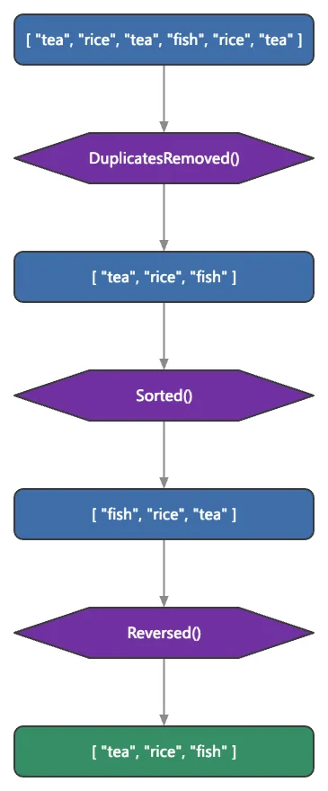

Collections & objects
Engine-backed functional pipeline plus a reflective object root; boxed storage caps native set-op speed.
6 Strong · 5 Solid · 1 Partial · 0 Emerging
Measured against: Lodash · Immutable.js · standard libraries · Folders: base/list(opens in a new tab) · base/object(opens in a new tab) · The guide to this area's functions

Rethought from first principles
What Softanza kept from what works, and what it rethought, as the library wrote it down in its design documents and narrations.
The Softanza wayThe same few questions — does it contain, how many, where — and the same verbs work on every structure; only the unit of position changes.
Kept from the best practice
- Default truth stays the platform's own: empty is false, something is true; IsTrue() behaves exactly like the native test before any extension. source(opens in a new tab)
- Keeps the usual safe-lookup discipline: check that a key exists (HasKey, HasPath) before reading it, so a lookup never silently creates an empty entry. source(opens in a new tab)
Rethought
- Strings and lists answer the same verbs — Contains, NumberOfOccurrence, FindAll — and StzFind accepts either, so one way of thinking covers every structure. source(opens in a new tab)
- A method's form carries its effect: Remove() changes the object, Removed() returns a changed copy, RemoveQ() chains, so side effects are visible in the name. source(opens in a new tab)
- Truth can be configured: IsTrueXT() lets a program declare which items or words make a list or string false, instead of one fixed empty-equals-false rule. source(opens in a new tab)
- An object can keep the story of its changes: QH() records every step of a chain, because a transformation normally leaves no trace of its path. source(opens in a new tab)
One of the largest surfaces in the library: ~155 list operations in a 6,500-line Zig core behind a 1,600-method Haro face, a functional pipeline, deep-path search, Lodash-grade grouping, and a reflective object root that 449 classes inherit, tuned for millions of items with measured residency wins. Two honest limits keep it short of the very top: boxed value storage holds raw set-op throughput an order of magnitude below NumPy/native, and there are no persistent immutable structures.
What a crafter does with it, and what stands out
- String-expression predicates run inside the engine, which the peers cannot do
- A deep-path search API that Lodash get only approximates
- A reflective object root 449 classes inherit, with Q-elevation and the Verb/Verbed/VerbQ grammar
- Measured residency wins at 1M items: 2.6x read-reuse, Classify -51%, Union -34%
What is owed
- Finish the list narration / fidelity grind (312 of ~602 legacy blocks error)
- Unboxed typed storage for native-speed set-ops
- Complete the residency migration (Slices 4 and 5, ~32 marshal-in sites)
- Persistent immutable collections with structural sharing
The Softanza way, run
What Softanza does differently in this area, shown by code taken from its narrations and guards, and run for this page.
One function finds a value in a string or in a list; only the unit changes, characters or items.
? @@( StzFind("tea", "tea rice tea fish") )
? @@( StzFind("tea", [ "tea", "rice", "tea", "fish" ]) )[ 1, 10 ] [ 1, 3 ]
run on 2026-10-01 21:17 inside the library at commit 0e72e2e2c; taken from base/education/program/courses/elementary-introduction/chapters/05-one-object-any-structure.en.md(opens in a new tab)
A chain of changes keeps its history: the starting value and the result of every step.
? @@( QH("1 AA 2 B 3 CCC 4 DD 5 Z").
RemoveCharsWQ('Q(@Char).IsNumberInString()').
RemoveSpacesQ().
RemoveDuplicatedCharsQ().
History() )[ "1 AA 2 B 3 CCC 4 DD 5 Z", " AA B CCC DD Z", "AABCCCDDZ", "ABCDZ" ]
run on 2026-10-01 21:17 inside the library at commit 0e72e2e2c; taken from base/test/string/466_keeping_the_history_of_updates_of_a_softanza_objec.ring(opens in a new tab)
Truth is configurable: once 'no' and 'off' are declared as markers, a string containing one counts as false.
SetSubStringsMakingAStringFalse([ "no", "off" ])
Then("a string carrying a marker is FALSE", IsTrueXT("no way"), FALSE)
Then("...and IsFalseXT says so", IsFalseXT("no way"), TRUE)
Then("a string without one is still TRUE", IsTrueXT("Hello"), TRUE)THEN a string carrying a marker is FALSE [PASS] THEN ...and IsFalseXT says so [PASS] THEN a string without one is still TRUE [PASS]
run on 2026-10-01 21:17 inside the library at commit 0e72e2e2c; taken from base/test/func/00_func_narrated.ring(opens in a new tab)
The articles of this area (15)
- Understanding Section Merging Features in Softanza 2024
- The Narrative of Transformations: Tracking Object History in Softanza 2024
- Unlocking the Power of Lists-in-Strings with Softanza 2024
- The Symphony of Repetition: A Coding Journey in Softanza 2024
- Repetition with Elegance: Exploring @N() and @NXT() Smart Builders in Softanza 2024
- Taming Deep Lists with Softanza 2025
- FastProUpdate(): A Semantic Rengineering of RingFastPro extension 2025
- Beyond Loops: The Walker Metaphor in Softanza 2025
- Walking at the Edge — A Naturally-Oriented and Practical Design 2025
- Beyond Inner Loops: Walking on the Second Dimension in Softanza 2025
- The Unified @Find() Function in Softanza 2025
- Named Variables in Softanza: the What, Why and How! 2025
- Safe Access to Haro Hashlists: How Softanza Solves a Common Problem 2025
- DeepContains still reports that "X" exists down inside the nested list 2025
- When “different” is not enough: the story behind Diff(), DiffXT() and DiffXTT() in stzList 2025
The lanes, one by one
Lanes and their notes are quoted as they were read at the source, on Read from the source on 2026-09-16.
The functions, by what they do
Testing and checking
- IsUpToNBoundsNamedParam ~~~~~~~~ in stzListNamedParams
composed example
o1 = new stzListNamedParams([ :UpToNBounds, 3 ]) ? o1.IsUpToNBoundsNamedParam() #--> 1
composed from the signature, run for this page - IsUptoPositionNamedParam Misspelled form in stzListNamedParams
composed example
o1 = new stzListNamedParams([ :UptoPosition, 3 ]) ? o1.IsUptoPositionNamedParam() #--> 1
composed from the signature, run for this page - IsUntilSubStringNamedParam Move IsToSubStringNamedParam() here in stzListNamedParams
composed example
o1 = new stzListNamedParams([ :UntilSubString, 3 ]) ? o1.IsUntilSubStringNamedParam() #--> 1
composed from the signature, run for this page - IsByManyOrWithManyOrUsingManyNamedParam ...Param(s) with s in stzListNamedParams
composed example
o1 = new stzListNamedParams([ :ByMany, 3 ]) ? o1.IsByManyOrWithManyOrUsingManyNamedParam() #--> 1
composed from the signature, run for this page - IsSet TRUE if all the items are unique (the list is a set). in stzList
composed example
o1 = new stzList([ 5, 3, 8, 3, 1 ]) ? o1.IsSet() #--> 0
composed from the signature, run for this page - CheckW CheckW: all items satisfy a W (DSL) condition. CheckW is the same -- now that the DSL is engine-backed (the perf/expressiveness split is gone). in stzList
o1 = new stzList([ "A", "B", "C" ]) ? o1.CheckW('{ isString(@item) and IsUppercase(@item) }') #--> 1library test - IsPair TRUE if the list holds exactly two items. in stzList
composed example
o1 = new stzList([ 5, 3, 8, 3, 1 ]) ? o1.IsPair() #--> 0
composed from the signature, run for this page - IsAList So a stzList answered "no" to being a list, and every `but IsAList()` arm in the library fell past it. stzObject.IsEither() has such an arm, followed by `but IsAnObject()` -- which a stzList IS -- so comparing two lists raised "Feature not implemented yet!" from a branch meant for something else entirely. in stzList
composed example
o1 = new stzList([ 5, 3, 8, 3, 1 ]) ? o1.IsList() #--> 1
composed from the signature, run for this page · written IsAList() in the library today: the host language already holds IsList(), and Haro removes the detour - Contains TRUE if the list contains the given item. in stzList
o1 = new stzList("a":"t") ? o1.Contains("x") #--> 0library test - IsMadeOf IsMadeOf family: "the list consists of these items". -- IsMadeOf / IsMadeOfThese -> contains ALL the given items. in stzList
o1 = new stzList([ "a", "b", "c", "a", "a", "b", "c" ]) ? o1.IsMadeOf([ "a", "b", "c" ]) ? o1.IsMadeOfSome([ "a", "b", "c", "x", "z" ]) #--> 1 #--> 1
library test - IsSorted TRUE if the items are sorted, ascending OR descending. in stzList
composed example
o1 = new stzList([ 5, 3, 8, 3, 1 ]) ? o1.IsSorted() #--> 0
composed from the signature, run for this page - IsEqualTo equality check (set-based, engine-backed) in stzList
o1 = new stzList([ "C", "A", "B" ]) ? o1.IsEqualTo([ "A", "B", "C" ]) ? o1.IsEqualToXT([ "A", "B", "C" ]) #--> 1 #--> 0
library test
and 104 more in the reference
Finding
- Find Find the given item: the positions of EVERY occurrence, as a list (engine-backed). (case-sensitive by default) in stzList
# find example 1 ? @@( Q([1, 2, 3, 4, 5, 3, 7]).Find(3) ) #--> [ 3, 6 ]
library test - FindNth Case-insensitive word-order aliases used by narrative tests. (Cannot live inside FindNthOccurrenceCS as nested defs because they take a different arity -- top-level methods instead.) in stzList
o1 = new stzList([ "_", "_", "♥", "_", "♥", "_", "_", "♥", "_", "_" ]) ? o1.FindNth(3, "♥") #--> 8
library test - FindItem The positions of every occurrence of the item (the Find contract). in stzList
composed example
o1 = new stzList([ 5, 3, 8, 3, 1 ]) ? @@( o1.FindItem(3) ) #--> [ 2, 4 ]
composed from the signature, run for this page - FindNext FindNext: convenience wrapper used by narrative tests. Accepts either FindNext(item, n) or FindNext(item, :StartingAt = n). in stzList
o1 = new stzList([ 1, 2, 3, "*", 5, 6, "*", 8, 9 ]) # findnext example 1 ? @@( o1.FindNext("*", :StartingAt = 4) ) #--> 7library test - LastItem getting the last item in the list in stzList
composed example
o1 = new stzList([ 5, 3, 8, 3, 1 ]) ? o1.LastItem() #--> 1
composed from the signature, run for this page - FindItems [[item, [positions...]], ...] in first-appearance order in stzList
o1 = new stzList([ "A", "B", "A", "C", "D", "B" ]) ? @@( o1.Index() ) #--> [ [ "A", [ 1, 3 ] ], [ "B", [ 2, 6 ] ], [ "C", [ 4 ] ], [ "D", [ 5 ] ] ]
library test - FirstHalf The first floor(n/2) items of the list. in stzList
composed example
o1 = new stzList([ 5, 3, 8, 3, 1 ]) ? @@( o1.FirstHalf() ) #--> [ 5, 3 ]
composed from the signature, run for this page - FirstItem getting the first item in the list in stzList
composed example
o1 = new stzList([ 5, 3, 8, 3, 1 ]) ? o1.FirstItem() #--> 5
composed from the signature, run for this page - FirstList allitemsareequalto (split-dropped / new). in stzList
o1 = new stzList([ "A", "B", 1:3, "C", "D", 4:5 ]) ? o1.FirstList() ? o1.FindFirstList() #--> 1 #--> 2 #--> 3 #--> 3
library test - NthToLast The nth item counted from the end: NthToLast(1) is the item -- before the last, NthToLast(2) the one before it, and so on. in stzList
o1 = new stzList([ "S", "O", "F", "T", "A", "N", "Z", "A" ]) ? o1.NthToLast(2) #--> N
library test - FindLargest smallest/largest positions, items-with-positions, etc. in stzList
composed example
o1 = new stzList([ 5, 3, 8, 3, 1 ]) ? @@( o1.FindLargest() ) #--> [ 3 ]
composed from the signature, run for this page - FindNextNth The position of the nth occurrence of the item after the given position. in stzList
composed example
o1 = new stzList([ 5, 3, 8, 3, 1 ]) ? o1.FindNextNth(2, 3, 5) #--> 0
composed from the signature, run for this page
and 105 more in the reference
Counting and measuring
- Min Min / Max for numeric lists in stzList
composed example
o1 = new stzList([ 5, 3, 8, 3, 1 ]) ? o1.Min() #--> 1
composed from the signature, run for this page - Sum Sum / Product / Mean (engine-backed) in stzList
# Sum([1,2,3,4]) is 10 ? Q([1,2,3,4]).Sum() # IsEmpty([]) is TRUE ? Q([]).IsEmpty() # IsEmpty([1]) is FALSE ? Q([1]).IsEmpty() #--> 10 #--> 1 #--> 0
library test - NumberOfLists How many LIST items the list holds. in stzList
composed example
o1 = new stzList([ 5, 3, 8, 3, 1 ]) ? o1.NumberOfLists() #--> 0
composed from the signature, run for this page - NumberOfPairs How many pairs the list holds. in stzList
composed example
o1 = new stzList([ 5, 3, 8, 3, 1 ]) ? o1.NumberOfPairs() #--> 0
composed from the signature, run for this page - NumberOfLevels Max nesting depth (a flat list is 1 level). in stzList
composed example
o1 = new stzList([ 5, 3, 8, 3, 1 ]) ? o1.NumberOfLevels() #--> 1
composed from the signature, run for this page - NumberOfClasses How many distinct classes the items form. in stzList
composed example
o1 = new stzList([ 5, 3, 8, 3, 1 ]) ? o1.NumberOfClasses() #--> 0
composed from the signature, run for this page - NumberOfLargest smallest/largest positions, items-with-positions, etc. in stzList
composed example
o1 = new stzList([ 5, 3, 8, 3, 1 ]) ? o1.NumberOfLargest() #--> 1
composed from the signature, run for this page - NumberOfLetters How many LETTER items the list holds. in stzList
composed example
o1 = new stzList([ 5, 3, 8, 3, 1 ]) ? o1.NumberOfLetters() #--> 0
composed from the signature, run for this page - NumberOfNumbers How many NUMBER items the list holds. in stzList
composed example
o1 = new stzList([ 5, 3, 8, 3, 1 ]) ? o1.NumberOfNumbers() #--> 5
composed from the signature, run for this page - NumberOfStrings How many STRING items the list holds. in stzList
composed example
o1 = new stzList([ 5, 3, 8, 3, 1 ]) ? o1.NumberOfStrings() #--> 0
composed from the signature, run for this page - NumberOfSmallest smallest/largest positions, items-with-positions, etc. in stzList
composed example
o1 = new stzList([ 5, 3, 8, 3, 1 ]) ? o1.NumberOfSmallest() #--> 1
composed from the signature, run for this page - NumberOfDuplicates NumberOfDuplicates counts the duplicate OCCURRENCES (every 2nd+ appearance), not the number of distinct duplicated items. For [ "A","B","2","A","A","B",2,2,"." ] that is 4 (A twice, B once, 2 once). NumberOfDuplicatedItems (distinct) would be 3. in stzList
oW = new stzList( o1.Words() ) ? oW.ContainsDuplicates() ? oW.NumberOfDuplicates() #--> 1 #--> 3
library test
and 28 more in the reference
Replacing and setting
- Update Replace the whole content with the given list (mutating; the enforcement guard sits at _SetContent, the single update point). in stzList
o1 = new stzList("A":"E") o1.Update([]) ? @@( o1.Content() ) #--> [ ]library test - ReplaceAt Positional replace: swap whatever lives at position n with pNewItem. Mirrors AddItemAt / InsertAt / RemoveAt naming. in stzList
o1 = new stzList([ "A", "a", "A" ]) o1.ReplaceAt(2, :By = "A") ? o1.Content() #--> A #--> A #--> A
library test - ReplaceSection ReplaceSection: the section [n1..n2] is replaced by ONE new item -- -- if that item is a list, it is inserted as a SINGLE element. This is -- the canonical Softanza semantics (see ReplaceSectionByMany to splice). in stzList
o1 = new stzList([ "1", "2", "_", "_", "_", "4", "5" ]) o1.ReplaceSection(3, 5, :With = "3") ? @@( o1.Content() ) #--> [ "1", "2", "3", "4", "5" ]
library test - ReplaceAllItems Replace every item by a single new one: ReplaceAllItems(:With = newItem) or ReplaceAllItems(newItem). in stzList
composed example
o1 = new stzList([ 5, 3, 8, 3, 1 ]) o1.ReplaceAllItems(2) ? @@( o1.Content() ) #--> [ 2, 2, 2, 2, 2 ]
composed from the signature, run for this page - ReplaceThisItemAt positional replacers (ported from the monolith) in stzList
o1 = new stzList([ 1, 2, "♥", 4, "♥" ]) o1.ReplaceThisItemAt(3, "♥", :With = "★") ? @@( o1.Content() ) o1.ReplaceThisItemAt(2, "BLA", :With = "★" ) ? @@( o1.Content() ) #--> [ 1, 2, "★", 4, "♥" ] #--> [ 1, 2, "★", 4, "♥" ]
library test - ReplaceOccurrencesByMany Replace items at the GIVEN positions with paNewItems consumed in order. in stzList
o1 = new stzList([ "A", "B", "*", "D", "*", "=" ]) o1.ReplaceOccurrencesByMany([ 3, 5, 6 ], ["C", "E", "F"]) ? @@( o1.Content() ) #--> [ "A", "B", "C", "D", "E", "F" ]
library test - ReplaceAnyItemAtPositions Set whatever lives at each of panPos to pNewItem. in stzList
composed example
o1 = new stzList([ 5, 3, 8, 3, 1 ]) o1.ReplaceAnyItemAtPositions([ 2, 3 ], 2) ? @@( o1.Content() ) #--> [ 5, 2, 2, 3, 1 ]
composed from the signature, run for this page - ReplaceRepeatedLeadingItem Replace the run of repeated LEADING items with a given value -- (:with names it). Delegates to ReplaceLeadingItems. in stzList
composed example
o1 = new stzList([ 5, 3, 8, 3, 1 ]) o1.ReplaceRepeatedLeadingItem(3) ? @@( o1.Content() ) #--> [ 3, 3, 8, 3, 1 ]
composed from the signature, run for this page - SetValueAt NOTE // Normally Set... does not belong to Softanza semantics, we use Replace instead. Here I use to cope with AI-generated code which tend to be alligned with the Set keyword in stzHashList
composed example
o1 = new stzHashList([ :name = "Aya", :age = 30, :city = "Niamey" ]) o1.SetValueAt(2, 5) ? @@( o1.Content() ) #--> [ [ "name", "Aya" ], [ "age", 5 ], [ "city", "Niamey" ] ]
composed from the signature, run for this page - UpdateNthKey Replace the KEY of the nth pair (mutating). in stzHashList
composed example
o1 = new stzHashList([ :name = "Aya", :age = 30, :city = "Niamey" ]) o1.UpdateNthKey(2, "a") ? @@( o1.Content() ) #--> [ [ "name", "Aya" ], [ "a", 30 ], [ "city", "Niamey" ] ]
composed from the signature, run for this page - ReplaceNthKey Replace the key of the nth pair (mutating). in stzHashList
composed example
o1 = new stzHashList([ :name = "Aya", :age = 30, :city = "Niamey" ]) o1.ReplaceNthKey(2, "AN") ? @@( o1.Content() ) #--> [ [ "name", "Aya" ], [ "AN", 30 ], [ "city", "Niamey" ] ]
composed from the signature, run for this page - ReplaceLastKey Replace the key of the last pair (mutating). in stzHashList
composed example
o1 = new stzHashList([ :name = "Aya", :age = 30, :city = "Niamey" ]) o1.ReplaceLastKey("AN") ? @@( o1.Content() ) #--> [ [ "name", "Aya" ], [ "age", 30 ], [ "AN", "Niamey" ] ]composed from the signature, run for this page
and 44 more in the reference
Removing
- StripNulls Remove the null items from the list (mutating). in stzList
composed example
o1 = new stzList([ "tea", "rice", "tea", "fish" ]) o1.StripNulls() ? @@( o1.Content() ) #--> [ "tea", "rice", "tea", "fish" ]
composed from the signature, run for this page - TrimToSize Cut the list down to its first n items (mutating). in stzList
composed example
o1 = new stzList([ 5, 3, 8, 3, 1 ]) o1.TrimToSize(2) ? @@( o1.Content() ) #--> [ 5, 3 ]
composed from the signature, run for this page - RemoveFirst remove the first occurrence of pItem in stzList
composed example
o1 = new stzList([ 5, 3, 8, 3, 1 ]) o1.RemoveFirst(3) ? @@( o1.Content() ) #--> [ 5, 8, 3, 1 ]
composed from the signature, run for this page - RemoveRange RemoveRange: remove items from start for a count in stzList
composed example
o1 = new stzList([ 5, 3, 8, 3, 1 ]) o1.RemoveRange(2, 5) ? @@( o1.Content() ) #--> [ 5 ]
composed from the signature, run for this page - RemoveSpaces RemoveSpaces / RemoveSpacesQ: drop every " " item (string-space) from the content. Engine-aware: only removes string-typed " ". in stzList
composed example
o1 = new stzList([ "tea", "rice", "tea", "fish" ]) o1.RemoveSpaces() ? @@( o1.Content() ) #--> [ "tea", "rice", "tea", "fish" ]
composed from the signature, run for this page - RemoveNthItem remove the item at position n; accepts :First / :Last in stzList
composed example
o1 = new stzList([ 5, 3, 8, 3, 1 ]) o1.RemoveNthItem(2) ? @@( o1.Content() ) #--> [ 5, 8, 3, 1 ]
composed from the signature, run for this page - RemoveNumbers Remove all the number items (mutating). in stzList
composed example
o1 = new stzList([ "tea", "rice", "tea", "fish" ]) o1.RemoveNumbers() ? @@( o1.Content() ) #--> [ "tea", "rice", "tea", "fish" ]
composed from the signature, run for this page - RemoveSection RemoveSection: remove items between two positions in stzList
o1 = new stzList([ 1, 2, 3, 4, 5, 6, 7, 8, 9, 10 ]) o1.RemoveSection(3, 8) # removesection example 1 ? @@( o1.Content() ) #--> [ 1, 2, 9, 10 ]
library test - RemoveFirstItem RemoveFirstItem / RemoveLastItem Remove the first item of the list (mutating). in stzList
composed example
o1 = new stzList([ 5, 3, 8, 3, 1 ]) o1.RemoveFirstItem() ? @@( o1.Content() ) #--> [ 3, 8, 3, 1 ]
composed from the signature, run for this page - RemoveDupOrigins Remove the first occurrence of each duplicated item (mutating). in stzList
composed example
o1 = new stzList([ 5, 3, 8, 3, 1 ]) o1.RemoveDupOrigins() ? @@( o1.Content() ) #--> [ 5, 8, 3, 1 ]
composed from the signature, run for this page - RemoveOccurrences remove the panOcc-th occurrences of pItem (by occurrence index) in stzList
o1 = new stzList([ "a", "b", "a", "a", "c", "d", "a" ]) o1.RemoveOccurrences([ 4, 1, 3 ], "a") ? o1.Content() #--> b #--> a #--> c #--> d
library test - RemoveThisNthItem remove the n-th occurrence of pItem in stzList
composed example
o1 = new stzList([ 5, 3, 8, 3, 1 ]) o1.RemoveThisNthItem(2, 3) ? @@( o1.Content() ) #--> [ 5, 3, 8, 1 ]
composed from the signature, run for this page
and 33 more in the reference
Adding
- AddItem Add the given item at the end of the list (mutating). in stzList
composed example
o1 = new stzList([ 5, 3, 8, 3, 1 ]) o1.AddItem(3) ? @@( o1.Content() ) #--> [ 5, 3, 8, 3, 1, 3 ]
composed from the signature, run for this page - AddItems adding many items to the list in stzList
composed example
o1 = new stzList([ 5, 3, 8, 3, 1 ]) o1.AddItems([ 2, 3 ]) ? @@( o1.Content() ) #--> [ 5, 3, 8, 3, 1, 2, 3 ]
composed from the signature, run for this page - ExtendTo Sugar aliases over ExtendToPositionXT: the same operation but using the more natural "ExtendTo" / "Extend" naming. Default filler is the empty string. in stzList
o1 = new stzList([ "A", "B", "C" ]) o1.ExtendTo(5) ? @@( o1.content() ) #--> [ "A", "B", "C", "", "" ]
library test - InsertAt InsertAt: insert an item at a given position in stzList
o1 = new stzList([ "A", "C", "D" ]) o1.InsertAt(2, "B") ? o1.Content() #--> A #--> B #--> C #--> D
library test - AddItemAt adding an item at a given position --> insert or extend in stzList
o1 = new stzList(1:5) o1.AddItemAt(8, 9) ? @@( o1.Content() ) #--> [ 1, 2, 3, 4, 5, "", "", 9 ]
library test - InsertAfter InsertAfter(:ItemAtPosition = n, item): NON-mutating -- returns the -- would-be list with item inserted after position n, leaving This as-is -- (use InsertAfterPosition for the mutating form). in stzList
o1 = new stzList([ "A1", "A2", "A3" ]) o1.InsertAfter( :ItemAtPosition = 3, "A4" ) ? o1.Content() #--> A1 #--> A2 #--> A3
library test - ExtendToPosition Extend the list up to position n. ExtendToPosition pads with 0 -- (number lists) or "" ; the WithItemsIn/Repeated forms pad by -- cycling through a given list (or the list's own items). in stzList
o1 = new stzList([ 1, 2, 3]) o1.ExtendToPosition(5) ? @@( o1.Content() ) o1.ExtendToPositionXT( 8, :With = 5 ) ? @@(o1.Content()) #--> [ 1, 2, 3, 0, 0 ] #--> [ 1, 2, 3, 0, 0, 5, 5, 5 ]
library test - InsertAfterPosition inserting an item after a given position in stzList
composed example
o1 = new stzList([ 5, 3, 8, 3, 1 ]) o1.InsertAfterPosition(2, 3) ? @@( o1.Content() ) #--> [ 5, 3, 3, 8, 3, 1 ]
composed from the signature, run for this page - InsertBeforePosition inserting an item before a given position in stzList
composed example
o1 = new stzList([ 5, 3, 8, 3, 1 ]) o1.InsertBeforePosition(2, 3) ? @@( o1.Content() ) #--> [ 3, 5, 3, 8, 3, 1 ]
composed from the signature, run for this page - InsertBeforePositions Insert the item before EACH of the given positions (mutating). in stzList
composed example
o1 = new stzList([ 5, 3, 8, 3, 1 ]) o1.InsertBeforePositions([ 2, 3 ], 3) ? @@( o1.Content() ) #--> [ 5, 3, 3, 3, 8, 3, 1 ]
composed from the signature, run for this page - InsertAfterManyPositions insert after/before many positions / by w-condition in stzList
o1 = new stzList([ "a", "b", "c", "d", "e" ]) o1.InsertAfterManyPositions([ 2, 4, 5 ], "*") ? @@( o1.Content() ) #--> [ "a", "b", "*", "c", "d", "*", "e", "*" ]
library test - InsertBeforeManyPositions insert after/before many positions / by w-condition in stzList
o1 = new stzList([ "a", "b", "c", "d", "e" ]) o1.InsertBeforeManyPositions([ 2, 4, 5 ], "*") ? @@( o1.Content() ) #--> [ "a", "*", "b", "c", "*", "d", "*", "e" ]
library test
and 25 more in the reference
Splitting and extracting
- SplitW SplitW MUTATES the content into the list of parts (the matching items are dropped; SplittedW is the passive twin). in stzList
composed example
o1 = new stzList([ 5, 3, 8, 3, 1 ]) ? @@( o1.SplitW("@item > 3") ) #--> [ [ 3 ], [ 3, 1 ] ]composed from the signature, run for this page - SplitAt SplitAt (engine-backed) Split the list at the given cut position(s): the parts. in stzList
composed example
o1 = new stzList([ 5, 3, 8, 3, 1 ]) ? @@( o1.SplitAt(2) ) #--> [ [ 5 ], [ 3, 8, 3, 1 ] ]
composed from the signature, run for this page - ExtractAll Empty the list, returning everything that was in it. in stzList
o1 = new stzList([ "A", "B", "C" ]) # extractall example 1 ? @@( o1.ExtractAll() ) # extractall example 2 ? @@( o1.Content() ) #--> [ "A", "B", "C" ] #--> [ ]
library test - ExtractNth Remove the nth item and return it. in stzList
composed example
o1 = new stzList([ 5, 3, 8, 3, 1 ]) ? o1.ExtractNth(2) #--> 8
composed from the signature, run for this page - SplitAfter Split the list after each occurrence of the item: each occurrence closes its part. in stzList
composed example
o1 = new stzList([ "tea", "rice", "tea", "fish" ]) o1.SplitAfter(3) ? @@( o1.Content() ) #--> [ "tea", "rice", "tea", "fish" ]
composed from the signature, run for this page - ExtractLast Remove the LAST occurrence of the item and return it. in stzList
o1 = new stzList([ "A", "B", "C", "_" ]) ? o1.ExtractLast("_") + NL ? o1.Content() #--> _ #--> A #--> B #--> Clibrary test - SplitBefore Split the list before each occurrence of the item: each occurrence starts a new part. in stzList
composed example
o1 = new stzList([ "tea", "rice", "tea", "fish" ]) o1.SplitBefore(3) ? @@( o1.Content() ) #--> [ "tea", "rice", "tea", "fish" ]
composed from the signature, run for this page - ExtractFirst Remove the FIRST occurrence of the item and return it. in stzList
o1 = new stzList([ "_", "A", "B", "C" ]) ? o1.ExtractFirst("_") + NL ? o1.Content() #--> _ #--> A #--> B #--> Clibrary test - SplitAtPacer splitting using a given pacer in stzList
composed example
o1 = new stzList([ "tea", "rice", "tea", "fish" ]) o1.SplitAtPacer(2, 5) ? @@( o1.Content() ) #--> [ "tea", "rice", "tea", "fish" ]
composed from the signature, run for this page - SplitToNParts Split the list into n (near-)equal parts. in stzList
o1 = new stzSplitter(3) ? @@( o1.SplitToNParts(0) ) o1 = new stzList([ "A", "B", "C" ]) ? @@( o1.SplittedToNParts(3) ) #--> [ ] #--> [ [ "A" ], [ "B" ], [ "C" ] ]
library test - ExtractSection Remove the items at positions n1..n2 and return them. in stzList
composed example
o1 = new stzList([ 5, 3, 8, 3, 1 ]) ? @@( o1.ExtractSection(2, 5) ) #--> [ 3, 8, 3, 1 ]
composed from the signature, run for this page - SplitAtPosition Split the list at the given position: the parts. in stzList
composed example
o1 = new stzList([ "tea", "rice", "tea", "fish" ]) o1.SplitAtPosition(2) ? @@( o1.Content() ) #--> [ "tea", "rice", "tea", "fish" ]
composed from the signature, run for this page
and 32 more in the reference
Ordering and moving
- Move Move / Swap accept the named-param spellings Move(:ItemFromPosition = a, :To = b), Swap(:Positions = a, :And = b), and the value form Swap(item1, :And = item2). in stzList
composed example
o1 = new stzList([ 5, 3, 8, 3, 1 ]) o1.Move(2, 5) ? @@( o1.Content() ) #--> [ 5, 8, 3, 1, 3 ]
composed from the signature, run for this page - Sort Sort the items in ascending order in place (mutating). For a copy, use Sorted. in stzList
? @@( StzListQ([ "him", [ "him" ], "" ]).Sorted() ) + NL o1 = new stzList([ "him", [ "him" ], "" ]) o1.Stringify() ? @@( o1.Content() ) o1.Sort() #--> [ "", "him", [ "him" ] ] #--> [ "him", '[ "him" ]', "" ]
library test - Swap Exchange the items at the two given positions (mutating). in stzList
composed example
o1 = new stzList([ 5, 3, 8, 3, 1 ]) o1.Swap(2, 5) ? @@( o1.Content() ) #--> [ 5, 1, 8, 3, 3 ]
composed from the signature, run for this page - SortBy Sort by a key expression (engine-backed via the W DSL). in stzList
o1 = new stzList([ "a", "abcde", "abc", "ab", "abcd" ]) o1.SortBy('len(@item)') # sortby example 1 ? @@( o1.Content() ) #--> [ "a", "ab", "abc", "abcd", "abcde" ]library test - Reverse Reverse the order of the items in place (mutating). For a copy, use Reversed. in stzList
composed example
o1 = new stzList([ 5, 3, 8, 3, 1 ]) o1.Reverse() ? @@( o1.Content() ) #--> [ 1, 3, 8, 3, 5 ]
composed from the signature, run for this page - MoveToEnd Move the item at position n to the END of the list (mutating). in stzList
composed example
o1 = new stzList([ 5, 3, 8, 3, 1 ]) o1.MoveToEnd(2) ? @@( o1.Content() ) #--> [ 5, 8, 3, 1, 3 ]
composed from the signature, run for this page - RotateLeft rotate -- circular shift in stzList
composed example
o1 = new stzList([ 5, 3, 8, 3, 1 ]) o1.RotateLeft(2) ? @@( o1.Content() ) #--> [ 8, 3, 1, 5, 3 ]
composed from the signature, run for this page - SortOnDown SortOnDown / SortedOnDown for stzList: when the list is flat (numbers / strings), forwards to descending sort on the whole list. When the list is a list-of-lists, forwards to the stzListOfLists.SortOnDown(n) which sorts on column n. in stzList
composed example
o1 = new stzList([ 5, 3, 8, 3, 1 ]) o1.SortOnDown(2) ? @@( o1.Content() ) #--> [ 8, 5, 3, 3, 1 ]
composed from the signature, run for this page - MoveToStart Move the item at position n to the START of the list (mutating). in stzList
composed example
o1 = new stzList([ 5, 3, 8, 3, 1 ]) o1.MoveToStart(2) ? @@( o1.Content() ) #--> [ 3, 5, 8, 3, 1 ]
composed from the signature, run for this page - RotateRight rotate -- circular shift in stzList
composed example
o1 = new stzList([ 5, 3, 8, 3, 1 ]) o1.RotateRight(2) ? @@( o1.Content() ) #--> [ 3, 1, 5, 3, 8 ]
composed from the signature, run for this page - MoveItemToEnd move item by value in stzList
composed example
o1 = new stzList([ 5, 3, 8, 3, 1 ]) o1.MoveItemToEnd(3) ? @@( o1.Content() ) #--> [ 5, 8, 3, 1, 3 ]
composed from the signature, run for this page - MoveItemToStart move item by value in stzList
composed example
o1 = new stzList([ 5, 3, 8, 3, 1 ]) o1.MoveItemToStart(3) ? @@( o1.Content() ) #--> [ 3, 5, 8, 3, 1 ]
composed from the signature, run for this page
and 20 more in the reference
Converting
- ToString ToString: a plain display form -- the items rendered one per line (monolith semantics: ToStringXT(:ConcatenatedUsing = NL)). Overrides the stzObject default so a stzList stringifies to its content, not to an "@noname" object handle. in stzList
composed example
o1 = new stzList([ 5, 3, 8, 3, 1 ]) ? o1.ToString() #--> 5 #--> 3 #--> 8 #--> 3 #--> ...
composed from the signature, run for this page - ToListInAString ToListInAString: the content rendered as a "[ ... ]" string (computable form). Delegates to stzListStringify, like the rest of this section. in stzList
? @@( StzListQ( 4:8 ).ToListInAString() ) ? @@( StzListQ( 4:8 ).ToListInAStringInShortForm() ) #--> "[ 4, 5, 6, 7, 8 ]" #--> "4:8"
library test - ToListOfStzStrings tion over the established per-string locale lookups. in stzList
composed example
o1 = new stzList([ "tea", "rice", "tea", "fish" ]) ? @@( o1.ToListOfStzStrings() ) #--> [ @noname, @noname, @noname, @noname ]
composed from the signature, run for this page - ToListInAStringInShortForm Short form: a contiguous run of integers (a, a+1, ..., b -- or the descending a, a-1, ..., b) collapses to the range literal "a:b". Anything else falls back to the full stringified list. in stzList
? StzListQ( 4:8 ).ToListInString() ? StzListQ( 4:8 ).ToListInStringInShortForm() #--> [ 4, 5, 6, 7, 8 ] #--> 4:8
library test - ToCode The hash list as runnable Haro code, as a string. in stzHashList
composed example
o1 = new stzHashList([ :name = "Aya", :age = 30, :city = "Niamey" ]) ? o1.ToCode() #--> [ :name = "Aya", :age = "30", :city = "Niamey" ]
composed from the signature, run for this page - ToStzHashList content access in stzListNamedParams
- ToStzTable The list turned into a stzTable object (rows; per the stzTable contract, the first row may carry the column names). in stzList
- ToStzListOfStrings Convert to a stzListOfStrings (for string-oriented chaining like -- ConcatenatedUsing / Joined). Needed by the ..Q() chain idioms. in stzList
- ToStzSetOfSections transforming the list of pairs into a stzhashlist in stzListOfPairs
- ToStzListOfSections transforming the list of pairs into a stzhashlist in stzListOfPairs
- Parse parsing in stzListParser
- ToStzList utility functions used by the other methods above in stzSplitter
and 3 more in the reference
Showing, drawing and formatting
- Show Print the list to stdout in its computable @@ form. in stzList
- ShowShort Print an abbreviated form of the list (first items ... last items). in stzList
- ShowShortN Print the abbreviated form showing n items at each end. in stzList
Walking and applying
- Map expression-backed operations (engine bytecode) in stzList
composed example
o1 = new stzList([ 5, 3, 8, 3, 1 ]) ? @@( o1.Map("@item > 3") ) #--> [ 1, 0, 1, 0, 0 ]composed from the signature, run for this page - WalkW Walk the list collecting where the W condition holds. in stzList
composed example
o1 = new stzList([ 5, 3, 8, 3, 1 ]) ? @@( o1.WalkW("@item > 3") ) #--> [ 1, 3 ]composed from the signature, run for this page - Filter expression-backed operations (engine bytecode) in stzList
composed example
o1 = new stzList([ 5, 3, 8, 3, 1 ]) ? @@( o1.Filter("@item > 3") ) #--> [ 5, 8 ]composed from the signature, run for this page - WalkWhen The When-walk over the items (see stzListWalker), driven by the given condition. in stzList
composed example
o1 = new stzList([ 5, 3, 8, 3, 1 ]) ? @@( o1.WalkWhen("@item > 3") ) #--> [ 1, 2, 3, 4, 5 ]composed from the signature, run for this page - WalkUntil Walk the items UNTIL the given condition holds. in stzList
composed example
o1 = new stzList([ 5, 3, 8, 3, 1 ]) ? @@( o1.WalkUntil("@item > 3") ) #--> [ 1 ]composed from the signature, run for this page - WalkWhere Walk the list collecting where the condition holds. in stzList
composed example
o1 = new stzList([ 5, 3, 8, 3, 1 ]) ? @@( o1.WalkWhere("@item > 3") ) #--> [ 1, 3 ]composed from the signature, run for this page - WalkWhile Walk the items WHILE the given condition holds. in stzList
composed example
o1 = new stzList([ 5, 3, 8, 3, 1 ]) ? @@( o1.WalkWhile("@item > 3") ) #--> [ 1 ]composed from the signature, run for this page - WalkFromTo PositionsWhere already defined above as alias of FindAllItemsW in stzList
composed example
o1 = new stzList([ 5, 3, 8, 3, 1 ]) ? @@( o1.WalkFromTo(2, 5) ) #--> [ 2, 3, 4, 5 ]
composed from the signature, run for this page - WalkZigZag walking in zigzag pattern in stzList
composed example
o1 = new stzList([ 5, 3, 8, 3, 1 ]) ? @@( o1.WalkZigZag(2) ) #--> [ 1, 3, 5, 5, 3, 1 ]
composed from the signature, run for this page - WalkEveryNth walking every nth position in stzList
composed example
o1 = new stzList([ 5, 3, 8, 3, 1 ]) ? @@( o1.WalkEveryNth(2) ) #--> [ 2, 4 ]
composed from the signature, run for this page - WalkNForward walking the list n items forward in stzList
composed example
o1 = new stzList([ 5, 3, 8, 3, 1 ]) ? @@( o1.WalkNForward(2) ) #--> [ 1, 3, 5 ]
composed from the signature, run for this page - WalkSkipping walk skipping n items in stzList
composed example
o1 = new stzList([ 5, 3, 8, 3, 1 ]) ? @@( o1.WalkSkipping(2) ) #--> [ 1, 4 ]
composed from the signature, run for this page
and 19 more in the reference
The explanations are the ones the library gives of itself, read from its documentation comments on 2026-10-01 04:14, from the library at commit 0e72e2e2c, by the library's own stzSelfDoc over 635 class sources.
The classes of this area
- stzListNamedParams · 1365 methods
- stzList · 887 methods
- stzHashList · 221 methods
- stzGrid · 196 methods
- stzListOfPairs · 98 methods
- stzFalseObject · 56 methods
- stzListRandom · 45 methods
- stzListChecker · 41 methods
- stzListOfLists · 41 methods
- stzYielder · 38 methods
- stzListReplacer · 37 methods
- stzListSorter · 36 methods
- stzListFlattener · 35 methods
- stzForEachObject · 34 methods
- stzItemCS · 34 methods
- stzTree · 34 methods
- stzListParser · 32 methods
- stzSplitter · 31 methods
- stzListFinder · 30 methods
- stzLog · 28 methods
- stzListClassifier · 25 methods
- stzListGetter · 25 methods
- stzListMerger · 25 methods
- stzListRemover · 25 methods